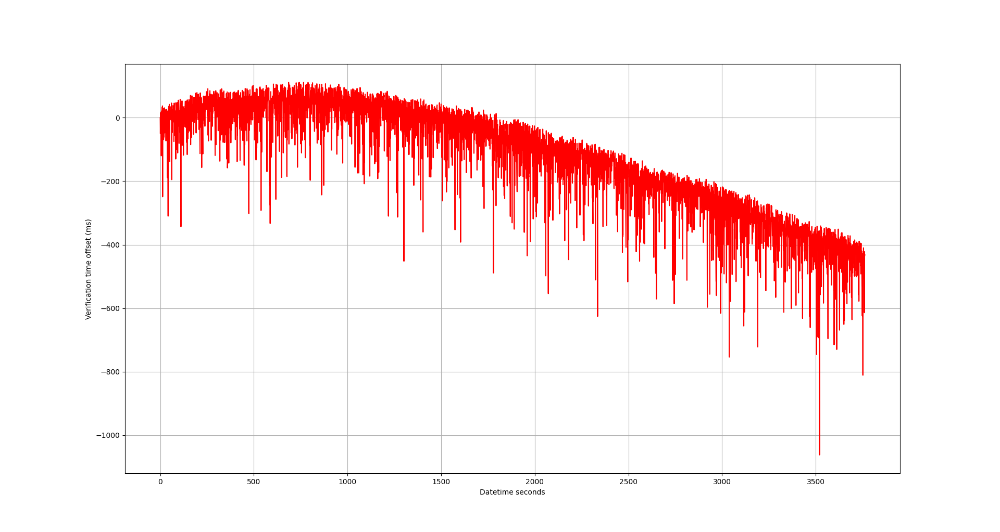

Introduction
Background
A real-time clock (RTC) is a clock that can be used to track "real-time". That is, the actual passing of seconds in the universe, with which we can keep accurate time of day. A simple alarm clock on your nightstand would be a good example. Real-time clocks often rely on some interesting techniques to keep time. Some use the power-line frequency of 60 Hz (50 Hz for those outside the Americas) as a baseline frequency to count off. Most end up using a specialized crystal oscillator that has some known frequency, commonly 32.768 kHz. This is a convenient frequency to use as 32.768 kHz is exactly 2^15 cycles per second, so it is easy to use with binary counter circuits.
Compared to real-time clocks, the clocks on a typical microprocessor are built differently. Many rely on internal RC oscillators that use a resistor-capacitor network as their frequency selective element. Internal RC oscillators are typically only good for 1-2% accuracy, this is due to a variety of factors but deviations in the production of the resistors and capacitors in the network is a common one. In addition to production tolerances, capacitors experience derating across temperature, making them difficult to use as RTC if the device experiences temperature swings. Some processors include tuning adjustment registers that allow the user to fine tune to get better results on top of the trim process they typically do at the fab, but I believe it is not the norm to include these registers.

Simple schematic showing a quartz crystal feeding the internal MPU oscillator
Many microprocessors also use crystal oscillators, which have better frequency stability compared to RC oscillators. Instead of a resistor-capacitor network, crystal oscillators use a piezoelectric crystal as the frequency-selective element. This is much more stable, and is often used to keep time in quartz wristwatches. However things are not perfect in the real world and there is typically still some error. This can be due to crystal deviations or any other number of imperfections in the circuit.
For calculating things like time any small error will present itself and over time we will have some drift. So we need to come up with a way to take our system clock and calculate real-time with some correction factor.
Motivations
Why would this project need to be done when many RTC modules already exist? Well, in my first version design of a wearable wrist device I opted not to include an RTC module in there. The main focus of the wearable was sensing the human body, so this was not critical. However, later I did want to add time-keeping features, but the cost of each PCB was driven quite high because of my use of [[Fine-pitch BGA layout and manufacture|fine-pitch BGA footprints]].
Requirements
Scope of work
This project will primarily involve data collection, numerical analysis, and the implementation of embedded C code. The goal is to understand how well an internal RC oscillator can be used to track real-time over extended periods.
Since I am most comfortable in Python, I will use it to handle data collection and numerical analysis. This will involve recording tick data from the MCU and using Python to process the data, identify deviations, and determine any potential corrections or compensations needed to achieve better accuracy.
On the device itself, the C language will be used as embedded code.
Capabilities
The project will aim to:
- Characterize the frequency stability of the internal RC oscillator over time
- Determine techniques to reduce or compensate for frequency drift.
- Implement embedded C code to track and correct system time in real-time.
- Validate the effectiveness of any corrections by comparing the calculated time to a reference RTC or another known accurate time source.
- My goal is to have the target accuracy stay within ±10 minutes over the course of a year
Resources
The project aims to be hardware-agnostic, meaning that any MCU with the ability to read back system ticks should work. However, access to certain features, like frequency adjustment registers or trim controls, could improve results (I personally did not have any of such features accessible)
Essential resources include:
- Microcontroller: Any MCU with an internal RC oscillator and the ability to read tick counts from a register.
- Data Collection Setup: This includes hardware to log tick data from the MCU to a host system (e.g., via UART or USB) and software to process the data.
- Analysis Tools: Python scripts to analyze frequency drift, calculate corrections, and visualize results.
I have provided sample code linked at the bottom of this document, which can be used to facilitate data logging, analysis, and corrections. This code serves as a foundation for the project, but it may require adjustments for specific MCUs or communication protocols you are intending to use
Concept and Design
Introduction to calculating time from clock frequency
Let's just introduce ourself to the basic arithmetic needed to calculate the passage of timing using "number of ticks" of a clock. The number of clock ticks is often tracked internally by MCU devices and can be read from a register. Let's write out the two variables we will use to calculate time, ticks (cycles) and frequency (HZ).
we can convert Hz into what it really means, which is how many cycles of something happened per second. The inverse of this would be seconds per cycle.
$$\frac{1}{f} \text{ (seconds/cycles)}$$ With these two variables, we can form an equation to calculate time. Units cancel on the left hand side to be left with just seconds on on the right.
$$\frac{t}{f} \text{ (cycles)} \times\text{ (seconds/cycles)} = s \text{ (seconds)}$$
Note that 1/f is simply period, so we can simplify the calculation a bit. It just makes a little more intuitive sense to leave f in there as that's what is commonly specified in the datasheet for system clocks.
$$t*T \text{ (cycles)} \times\text{ (seconds/cycles)} = s \text{ (seconds)}$$
This is great if our frequency (period) is known exactly, but in the real-world there will very likely be a deviation between the calculated period and real period. We need to come up with a way to correlate our system time with real-time.
A brief aside on least squares best-fit
Ok, so we know we need a way to correlate our system time with real-time, but how do we arrive at what correlation to use? How can we input some sample data and get out exactly what coefficients and equation to use to perform this mapping of times? Well, that's where the least squares best-fit method comes in. This is a common method used in machine learning, but can be used for finding any statistical relationship. I will try and provide some mathematical background behind the method and how we will use it in this project.
The least squares best-fit method is essentially an optimization problem where the goal is to minimize the sum of the squared residuals (Euclidean norm) between an equation output and some known "truth values"
Whoa, lots to unpack there. Optimization problems, are fairly straightforward, we typically want to find the maximum or minimum of some value. Residuals are the differences between the measured values and the values predicted by our model. Often the Euclidean norm is used to capture these differences well. So putting it all together, least squares best-fit minimizing the difference between what our model would output and what we input as what our actual "truth values".
Let's start looking at some equations for this, specifically what our model looks like. Any linear relationship can be represented using a vector of coefficients. For example, matrix A is commonly used to represent the inputs to the model, and the goal is to solve for the coefficients w.
$$[y] = [A]*[w]$$
as a very brief example, let's use the classic linear fit equation of y = mx + b
$$[w] = \begin{bmatrix} m \ b \end{bmatrix}$$
By computing the matrix multiplication of these two matrices you get the final product y.
This technique is highly effective for finding the coefficients of linear relationships. It's important to note that "linear" doesn't just refer to simple equations like y = mx + b. In this context, "linear" applies to any system that exhibits certain properties, such as scaling the inputs resulting in proportional scaling of the outputs. For more information on what qualifies as a linear system, consider looking into the superposition principle.
calculating our coefficients
So what is the techinque for finding the vector w? Well, what we need to gather is data on our input variables (matrix A) along with what our output should be (matrix y). Let's go back to our matrix equation
$$[y] = [A][w]$$
I won't get into the detailed mathemtical proof, but will just go over the higlights. As I mentioned briefly earlier, what we really want to do is turn this into a miniization problem such that for all w* we have
$$\left\| A w - \bar{y} \right\| \leq \left\| A x - \bar{y} \right\|$$ this is essentially minimizing the residual between our computed value and our known truth value y I will skip all the actual basis for this and skip straight to the solution. If you do the math, you eventually find that you can see that
$$w = (A^T*A)^{-1}A^{T}y$$ If you are interested in reading more about the topic, these notes from the University of Marlyland are a good read
Applying to our example
In this example, we want to find the relationship between the "system" passage of time with the "real world" passage of time. We want to be able to input system time and get out real time. For our input, let's start talking in terms of microprocessor ticks as our base unit.. We could convert this to uncalibrated system time using our clock period, but it's easier to "bundle" that conversion into our final coefficients in my opinion.
Let's also assume we have a simple linear relationship between the system time and real-time. I actually did try higher-order fits with little success, so let's keep it simple with this coefficient matrix A, where t in this case is the number of ticks
$$[A] = \begin{bmatrix} t & 1 \end{bmatrix}$$
We basically want to find the values of the coefficient vector $w$ where the relation is of the following form
$$\text{Real ms}=[w_0]t+w[_1]1$$
Essentially we need to solve our model with N datapoints of training data, forming an N x M matrix where M - 1 is the order of our relationship equation. As we have 2 variables, we have a first order (linear fit) relationship.
If you want to do the raw math, I wrote a function using the numpy package to solve this.
# LeastSquares: Compute Least Squares Matrix Regression
# This function computes the least squares regression of Aw=d where
# A = matrix of input values according to predefined equation
# d = input truth values to train with
def least_squares(A, d):
# Create matrices and find w from data
w = np.linalg.inv(A.transpose() @ A) @ A.transpose() @ d
return wThis can also be accomplished quite simply in Python with the linregress function from the scipy Python package.
# get linear fit in the form of y = m*x + b
def linear_fit(x_arr, y_arr):
# Calculate linear regression parameters
slope, intercept, r_value, p_value, std_err = linregress(x_arr, y_arr)
print(f"y=mx+b <<< --- >>> {slope}*[x] + {intercept}")
# make a plot of residuals
plotter.time_plot(
x_arr,
residuals(x_arr, y_arr),
"Time series",
"Linear best fit residuals"
)
stats = [slope, intercept, r_value, p_value, std_err]
return statsImplementation / Building
Process
Ok, I think I explained all the background needed. Now I'll talk about execution.
Really the first step was to get sample data on the clock. I hooked up my board over UART/USB and flashed a simple program to output the system (microcontroller) time. With the host PC, I was able to sync up real-time and system time and log each datapoint to a CSV file.
Now, we run some Python code to perform the least-squares best fit analysis on. I won't do a deep dive on the code here, if you are interested you should just check out the GitHub repo.
Basically when I run my Python script I get the following for $w$
$$[w] =\begin{bmatrix} w_1 \ w_0 \end{bmatrix} = \begin{bmatrix} 9.9006656*10^{-7} \ -2.149 \end{bmatrix}$$
this would translate to an equation like so, with $t$ as our system ticks.
$$\text{Real ms}=[w_1]t+[w_0]$$ Although I included a constant offset in my equation, in practice it doesn't make much sense to include it in the final calculation. It is just a couple ticks different, which won't make any impact. So let's get rid of w0*, and we are left with the following very simple equation.
$$\text{Real ms}=[w_1]*t$$
embedded C code
Now that we have done all our math, we have our final coefficients that we can implement on our device. We can then plug this into our embedded C code on the device to compute actual time with several functions
The first function simply gets the raw, uncalibrated system time. There is some extra code in this function to handle the ticks register overflowing, I will talk about that later.
uint32_t get_raw_ticks() {
uint32_t ticks = ClockP_getSystemTicks();
// handle overflow condition
if (ticks < prev_ticks) {
ticks_overflow++;
}
prev_ticks = ticks;
return ticks;
}we can then take our raw tick value and convert that into actual milliseconds of system run time
uint32_t get_ms(void) {
raw_ticks = get_raw_ticks();
raw_ticks = raw_ticks - tick_offset;
double slope = 9900.6656;
uint32_t correction = slope*raw_ms / 10000;
uint32_t y = raw_ticks - correction;
y = y + ticks_overflow*(UINT32_MAX - slope*UINT32_MAX / 10000);
return y;
}However, who understands time intuitively in milliseconds? We need a function to convert that milliseconds into actual human time.
/*
* update_time:
*/
Time get_sys_time() {
Time sys_time;
uint32_t cur_ms = get_ms();
// Calculate hours
sys_time.hours = cur_ms / (3600 * 1000);
// Calculate minutes (remaining milliseconds after hours are removed)
sys_time.minutes = (cur_ms % (3600 * 1000)) / (60 * 1000);
// Calculate seconds (remaining milliseconds after minutes are removed)
sys_time.seconds = (cur_ms % (60 * 1000)) / 1000;
return sys_time;
}and the actual last part (which may or may not be needed depending on your application and use-case) would be to adjust the offset of our system time to actually line up with time of day.
I will just flash the basics of my function, which are missing a struct for handling Time with hours, minutes, and seconds and a function for adding two times together and handling overwrap into the next day.
Time get_current_time() {
return add_time(get_sys_time(), time_offset);
}Wins
Once I got the basic data collection and analysis skeleton down, getting more data and analyzing it was super seamless. It was actually quite enjoyable compared to other analysis like when I'm analyzing my IMU where I actually need some physical stimuli to perform analysis. With the clock I could just hook up my embedded target and crank away collecting data with ease.
I was also greatly helped on the least-squares analysis side by the fact that I've used this in at least a couple projects before, mainly in the context of sensor calibration. I was able to leverage some of the same code and get something running much faster than if I was doing all the research and code writing from scratch.
Challenges
One of the biggest hurdles that I didn't expect was actually writing the firmware to handle all the processing. It was easy enough to get a basic thing working for several hours, but getting the system to handle things like overwraps and lining it up to real time took some code iterations.
The ticker counter on most devices is probably 32 bits, maybe 64 bits for some larger processors. But eventually this will overwrap and we want to be able to track this so we don't lose time. In the code above there is a line that handles this overflow and adds it to our final result.
Conclusion
Status and Results
When I actually implement my linear fit on the MCU, I get the following results
Please note that for my tests I actually used a slope of
$$w_0=[7.193e-3]$$
We can run this on some verification data and see the following residual plot.

To summarize what this residual shows, after an hour I'm off by about 0.5 seconds.
That turns out to be about 73 minutes per year, which is outside of my 10 minute per year bench mark I was hoping for.
Reflection
Although I didn't hit my 10 minutes per year benchmark, I am happy I could patch-work my initial PCB design to be able to tell time. Oh well, version 2 of my wearable design will include a real-time clock module so this may have been a hopeless activity.
One thing that surprised me was the same coefficients worked (well enough) across all boards. As in, I didn't have to repeat the data collection and coefficient computation process for each specific hardware combination. This surprised me. Possibly it helps if your microcontrollers are from the same lot of material.
Looking forward
I don't think I will continue working on internal RC oscillators to be used as real-time clock modules. I think this implementation only makes sense if you are
- looking for a low-cost RTC solution
- really have to minimize board space
- Don't need very precise RTC accuracy
However, if I were to do future work on this I would probably first look at temperature calibration. I included a temperature variable in my equation, but it didn't improve results at all because my device was at room temperature. If I bring it down below 0 degrees Celsius or above 100 C, I am certain I would see some devations in my model. Adding another variable to calibrate out temperature deviations would hopefully allow for real-time clock keeping performance across temperature.